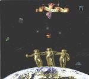

| Artist: | Various |
| Title: | Floralia Vol. 3 |
| Label: | Mizmaze WoT4CD99003 |
| Length(s): | 76 minutes |
| Year(s) of release: | 1999 |
| Month of review: | [02/2002] |
| 1) | Cosmic Gardeners (Ger) - Moment Opens Moment | 5.06 |
| 2) | Amp (UK) - Left It (Eng) | 4.36 |
| 3) | Korai Orom - Welcome To The Hippie Future (Hun) | 7.06 |
| 4) | Tom Kazas - Shadows Of White (Aus) | 4.52 |
| 5) | Ohm - Super Breakout (USA) | 6.10 |
| 6) | In The Labyrinth - Sagarmatha (Swe) | 5.08 |
| 7) | Smoking The Century Away - Professing The Non-pasteurized (Mex) | 5.57 |
| 8) | This Fluid - Joni's Sweet Echo (Gre) | 4.38 |
| 9) | Acid Mothers Temple And The Melting Paraiso U.F.O. - Psycho Karman (Jap) | 5.45 |
| 10) | Magic Carpathians - First Step Into The Mountain (Pol) | 4.53 |
| 11) | Le Forbici Di Manitu - Division 6 (Ita) | 4.48 |
| 12) | Ectogram - Ochenaid Llesg (Wal) | 5.37 |
| 13) | Tombstone Valentine - The Web (USA) | 5.22 |
| 14) | Alquimia - Floralia (Eng) | 6.24 |
Amp's Left it also has some psychedelic influences, but more in a Hawkwind way. The vocals are drowned out by the music, creating associations with Hawkwind's Sonic attack. Okay track.
The strong rhythms of Welcome to the hippie future give a pretty strong drum 'n' bass vibe, although the thin synth and guitar sounds steer away from that genre, as do the ethnic sounding chants. This track isn't nearly as spacy as the title would suggest. The jumble of styles make it seem inconsistent. And if that's not enough: there really isn't enough idea in this track to fill seven minutes. Not a winner.
Shadows of white is the only track that really appears a song. Even though its style sounds familiar, I can't say exactly what it is I hear. There's some echo of Rupert Hine (especially some of the background vocals), but that's not all. Tom Kazas presents a flowing and very accessible track in a progressive vein. I like this one.
Ohm's Super breakout is an experimental electronic track, in the vein of Tangerine Dream's and Kraftwerk's early works. I like this one, even though what was experimental 25 years ago, isn't necessarily so nowadays.
Sagarmatha has a very Indian sound to it, as the title would suggest already. Flute and citar remind of the mid seventies collection of India directed western musicians, Deuter's name come directly to mind. In The Labyrinth do well at hiding they are from Sweden, but don't really add anything to the international stage.
Professing the non-pasteurized (come again?) is an experimental track in the vein of Soft Machine. The melody is pretty well hidden, but the saxophones definitely sound desperate for release to me. Call me crazy, obscene even, but I can't help liking this stuff.
This Fluid use the technique of sampling voices and using them as keyboard sounds. This was pretty popular in the late eighties, but luckily isn't anymore. The basis for the track is a laid back rhythmical melody, without a clear melody, with male vocals that remind of Tom Waits and later in the track some female vocals singing what sounds like a ditty to me. I'm not too impressed.
Psycho karman is definitely a Hawkwind rip off of the Sonic attack type. Sure, it's a nice listen if you're into this kind of stuff, but there is no originality in sight on this one. And what the ip are Acid Mothers Temple And The Melting Paraiso U.F.O.?
First step into the mountain is a track with a somewhat lazy feel. Flute, some woodwork (I'm not sure what) and ethnic vocals remeniscent of Dead Can Dance's Lisa Gerrard. This is pretty good, especially since it (just) manages to steer away from being derivative.
Division 6 is all dissonance, both vocals and guitars, somewhat reminiscent of some of Sonic Youth's works. The track sounds like one of those experiments which is exactly that: an experiment.
Ectogram present a track which is just as dissonant. The only differences with the previous one being that this track is not reminiscent of Sonic Youth and does have some melodic development. These differences make the track listenable, but that's about it.
The web is laid on a basis that is somewhat soundscape like, with piano behind it, sounding somewhat uncertain at times. The female vocals are somewhere between speaking and singing. This gives the track a sketchy feeling. All and all it's pretty good.
A laid back keyboard melody with wooden rhythms, with some female opera-sounding chanting along with a, once again, female husky voice create an atmosphere that is somewhat like Robbie Robertson's Somewhere down the crazy river. But then again, the track is completely different from Robbie's. Nice one.